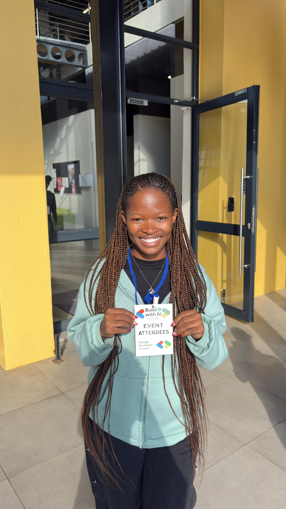

ABOUT ME
Getting to know the person behind the code.
I am a Computer Science and Informatics student with a growing interest in software development, web applications and technology.

WHO I AM
I'm a developer who enjoys building things.
I am currently studying a Bachelor of Science in Computer Science and Informatics at the University of Johannesburg.
My studies have introduced me to programming, software development, databases, networking and information systems. I enjoy taking what I learn and turning it into practical projects.
I have worked with technologies such as Java, C++, C#, Python, JavaScript, HTML, CSS, MySQL and SQL Server.
I am continuing to grow as a developer and looking for opportunities where I can gain practical experience, contribute to real software projects and continue developing my technical skills.
WHAT INTERESTS ME
Areas I'm exploring
My interests continue to develop as I gain more exposure to different areas of technology.
Software Development
I enjoy creating applications and learning how different parts of a software system work together.
Web Development
I enjoy building websites and web applications and connecting the frontend with backend systems and databases.
Databases
I am interested in how applications store, retrieve and manage information using relational databases.
Networking
My coursework has introduced me to TCP, UDP, sockets and client-server communication, which I continue to explore through practical projects.
MY APPROACH
Learn it. Build it. Improve it.
I believe the best way to improve as a developer is by actually building things. Every project gives me an opportunity to understand something better, solve problems and improve my skills.